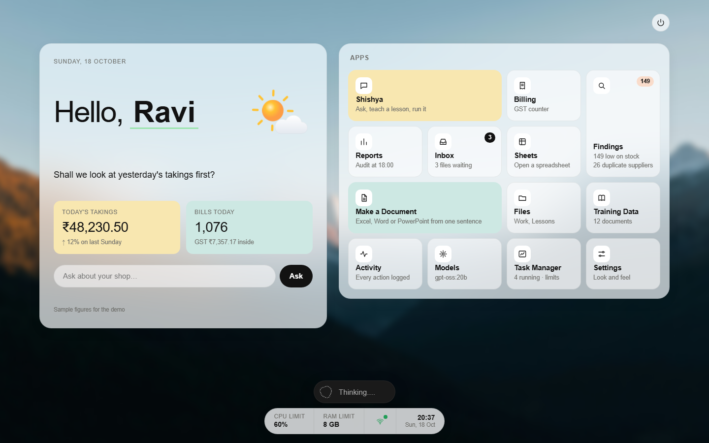
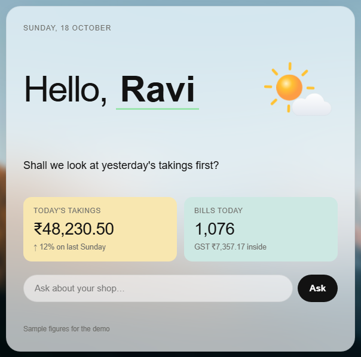
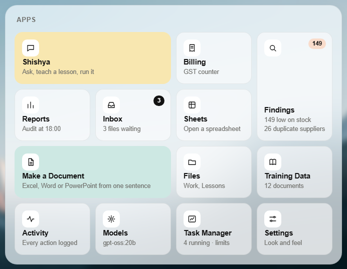
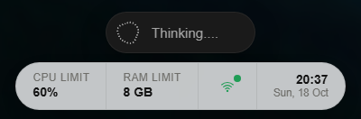

How the new home screen looks and why: the palette, type, layout, every component, how it behaves, and a ranked list of what to improve next.

A calm, flat desk for a shop owner: one glance shows today's money, what needs attention, and that the AI is working safely on this laptop.
The owner of a single-branch pharmacy or shop, at a busy counter, often on an older laptop, sometimes reading in Hindi or Telugu. Every decision below is judged against that person, not against a design award.
| Decision | Why |
|---|---|
| Flat design, not glass, neumorphism or skeuomorphism | Best contrast and readability at a counter, cheapest to draw while a local AI model is using most of the machine, and matches Windows 11 and macOS. |
| Mica (frosted glass) on the panels and dock only | Lets the wallpaper show through without hurting text, because the content inside the panels stays solid. |
| Light theme only | One look to design, test and support. Dark mode was removed on purpose; see the improvements list for when to revisit. |
| A real photo, blurred 6 px | Gives the screen warmth and place; the blur stops it competing with the content. |
| Everything bundled locally | The app must work with the network switched off. No fonts, libraries or images load from the internet. |
All colours are defined once as tokens at the top of home.html (the :root block). Change a token and every component that uses it follows. Never type a colour directly into a component.
--page #F3F3F0--card #FFFFFF--mica 250,251,252 @ 70%#1A1A1A#A3A3A3--ink #121212--ink-2 #6E6E6A--ink-3 #A3A39E--line black @ 7%--butter #F8E7B0--mint #CDE8E3--peach #F9DCCB--accent-2 #9BE5AE--accent #1F9D55--warn #B87800--bad #C8321E#FFC233 → #FD9D45Helvetica Neue, falling back to Helvetica, Arial Nova, then Arial. On Windows this usually renders as Arial, which is close enough at these sizes. One family throughout; hierarchy comes from size and weight.
| Role | Size | Weight | Notes |
|---|---|---|---|
| Greeting | 36–60 px (scales) | 500, name 700 | Letter-spacing −0.035em; name underlined 3 px soft green |
| Big figures | 28 px | 500 | Tabular numbers so digits line up |
| Line of the day | 18 px | 400 | Ten lines rotate, one per day |
| Body, tile names | 14.5–15 px | 600 names | Tile names bold, descriptions regular |
| Orb pill text | 15 px | 500 | Grey #A3A3A3 on dark, four dots: "Thinking...." |
| Labels (eyebrows) | 11.5–13 px | 600 | Uppercase, letter-spacing 0.04–0.08em |
| Shape | Corner radius |
|---|---|
| Panels (greeting, apps) | 24 px |
| App tiles | 16 px |
| Figure cards | 14 px |
| Icon chips | 10 px |
| Dock, pills, buttons, input | fully round |



| Part | What it does | In the real app |
|---|---|---|
| Orb pill | Dark capsule with a 32 px animated dot orb and the current verb. Click it to see all nine states: Working, Searching, Solving, Listening, Connecting, Weaving, Composing, Thinking (idle), Shaping. | Follows what the AI is actually doing. |
| CPU limit | Opens a sideways dial, 10–100% in steps of 10. The chosen number sits in the centre in green; numbers fade with distance. Scroll, drag, click or use arrow keys. | Caps the sandbox's processor use (Windows job object). |
| RAM limit | The same dial, 2–16 GB. Notes that the AI model needs about 7 GB. | Caps the sandbox's memory. |
| Network | A Wi-Fi icon: green when locked, amber when open. Opens a vertical wheel: Locked, Browsing, SSH. | Starts sandboxed apps with or without network permission. Every change is logged. |
| Clock | Time and short date. | Same. |
| Power (top right) | Asks before shutting down, in the page itself. | Stops the sandbox. |
An alpine valley photo at dawn, saved as web/wallpaper.jpg (2000 × 1125, 159 KB), blurred 6 px and scaled 4% so the blur's soft edge never shows.
| File | What it is |
|---|---|
web/home.html | The whole screen: tokens, styles, markup and script in one file. No build step. |
web/wallpaper.jpg | The background photo. |
web/vendor/thinking-orbs/ | The orb drawing engine from Libraries.dev, v0.3.2, MIT licence. Only the framework-free engine is included, so no React is needed. |
docs/design/ | This guide's source and its images. |
:root block. Do not add new colours inside components.<button class="tile">. Add wide or tall to change its size. Keep the total so the grid fills without holes.wallpaper.jpg with any landscape photo about 2000 px wide and under 300 KB. Darker photos need a stronger Mica (raise the 70% in --mica).LABEL list in the last script block.DIALS list (CPU 10–100 by 10, RAM 2–16 by 1).LINES list (ten lines).Ranked by how much each matters to a shop owner at the counter. High before the December submission, Medium if there is time, Later after.
| Priority | Issue | Suggested fix |
|---|---|---|
| High | Hindi and Telugu text may show as boxes | Helvetica and Arial have no Devanagari or Telugu letters. Bundle Noto Sans Devanagari and Noto Sans Telugu in web/fonts/ and add them to the font stack. |
| High | Weather needs the internet, but the sandbox is offline | Fetch it on the host side only (outside the sandbox), cache it, and fall back to a time-of-day sun or moon when offline. Never let the sandbox fetch it. |
| High | Lower part of the panels turns grey over the dark mountains | Add a light gradient inside the Mica panels (more white towards the bottom) or raise --mica to 78%. |
| High | Blur and frosted glass can be slow on old laptops | Save a pre-blurred copy of the wallpaper instead of blurring live, and fall back to solid panels when Windows "transparency effects" are off. |
| Medium | Empty space in the greeting card between the name and the line of the day | Tighten the gap, or use it for "next up" (the 18:00 audit, approvals waiting). |
| Medium | Findings tile has empty space at the top | Add a tiny bar chart of low-stock items by category. |
| Medium | Dock labels are small (11.5 px) | Raise to 12.5–13 px; the counter is read from arm's length. |
| Medium | Orb pill and dock are two separate pieces | Try joining them into one bar, or slide the pill out of the dock only while the AI works. |
| Medium | The dials only accept dragging and clicking | Let people type a number too, and show the current usage next to the limit. |
| Medium | Tiles look clickable but do nothing yet | Wire each to its app and show a loading state on the orb while it opens. |
| Later | No dark theme | Revisit only if owners use it at night. Design it fresh rather than inverting colours. |
| Later | One wallpaper | Offer three or four, plus a plain colour for video calls (moving or busy backgrounds blur on screen-share). |
| Later | Phone layout only lightly checked | Test at 400 px wide; the dock needs a two-row version. |
| Later | Keyboard shortcuts | For example / to jump to Ask, L for the network lock. |